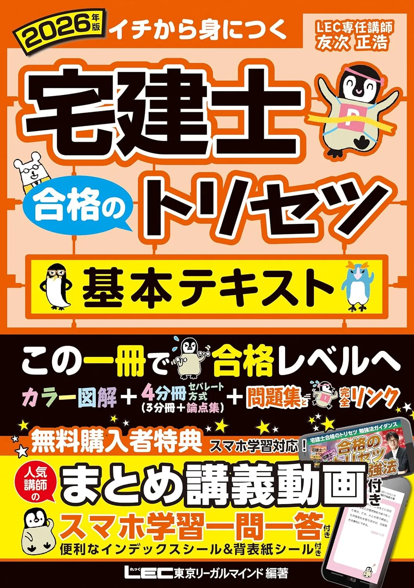
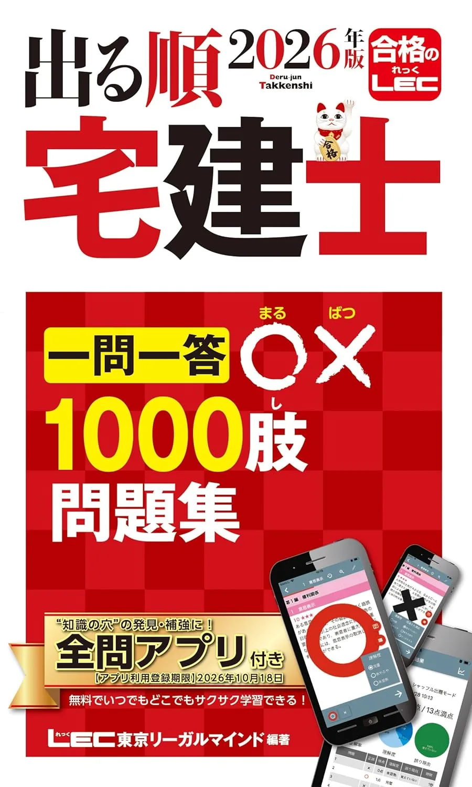

宅建士のおすすめテキスト3選【2026年度版・独学】
2026年度版テキスト3冊を、章立て・解説の厚み・演習との相性で比較します。価格・在庫は購入前に各Amazonページでご確認ください。
この記事の要点
本記事を読むと、2026年度版テキスト3冊の向き不向きが分かり、たとえば「TAC完全攻略→平日45分×5＋土曜120分→8月末第1周→9月から論点別過去問」まで具体例付きで設計できます。
- 「2026年度版 みんなが欲しかった! 宅建士の教科書」
- 「2026年版 宅建士 合格のトリセツ 基本テキスト」
- 「2026年版 出る順宅建士 合格テキスト」
- 18週逆算
- 2026年度版
この記事の信頼性について
| 執筆 | 宅建マスター編集部（資格学習サイトの編集チーム） |
|---|---|
| 確認 | 公式情報確認担当（公開前に一次情報との照合を行う担当者） |
| 事実確認日 | 2026-06-11 |
| 主な参照元 |
16月開始：18週で1冊を決める3点
テキスト選びはRETIO要項確認後の3点チェックから始めます。たとえば6月11日の週末に書店で1章試読——週10時間なら通勤45分×5日＋土曜150分の配分が現実的です。
| 観点 | 確認内容 |
|---|---|
| 出題範囲 | RETIO要項の4分野と目次が一致するか |
| 解説量 | 法律未経験か実務経験ありかで厚みを選ぶ |
| 演習接続 | 同系統の問題集・一問一答に進めるか |
初受験で週10時間なら、TAC本試験完全攻略→8月末第1周→9月から論点別過去問、という2段階が選ばれやすいです。3点セットの全体像は教材選びのガイド、月次の組み方は学習計画のガイドで10月18日から逆算してください。
おすすめテキスト3選（比較）
価格・在庫・版情報は執筆時点（2026-06-04）のAmazon税込参考です。購入前に必ず販売ページでご確認ください。
| 順位 | 商品名 | 価格（税込参考） | ページ数 | 向いている人 |
|---|---|---|---|---|
| 1 | 2026年度版 みんなが欲しかった! 宅建士の教科書 | ¥3,850 | 880 | 解説厚めの本格テキストで4分野を体系的に学びたい独学者 |
| 2 | 2026年版 宅建士 合格のトリセツ 基本テキスト | ¥3,300 | 644 | 動画講義付きで論点整理から学びたい人 |
| 3 | 2026年版 出る順宅建士 合格テキスト | ¥2,420 | 427 | 出る順シリーズでコンパクトに論点を押さえたい人 |
2026年度版 みんなが欲しかった! 宅建士の教科書
- 権利・法令・税務・宅建業法の4分野を1冊で整理
- TAC論点別過去問題集・一問一答と章立ての相性がよい
- 社会人独学のメインテキスト定番

2026年版 宅建士 合格のトリセツ 基本テキスト
- 無料講義動画付きで独学の理解を補強しやすい
- 分冊可能で持ち運び・分野別復習に向く
- 厳選分野別過去問題集（別記事）への接続がスムーズ

2026年版 出る順宅建士 合格テキスト
- 出る順シリーズの論点整理型テキスト
- ウォーク問過去問題集・模試（別記事）と縦串が明確
- TAC教科書より薄く、短期学習にも向く
23冊のタイプ別：週次時間の当て方
2026年度版3冊は、週次時間の使い方が異なります。例えば週10時間なら、TAC完全攻略は平日30分×5＋土曜150分で約3か月で第1周、LECトリセツは動画45分＋土曜120分で4分野を交互に進める設計が向きます。
| タイプ | 向く受験生 |
|---|---|
| TAC本試験完全攻略 | 初受験・4分野を1冊で厚く学びたい |
| LEC合格のトリセツ基本 | 動画で補強しつつ論点整理したい |
| LEC出る順合格テキスト | コンパクトに進めウォーク問へ接続 |
いずれも2026年度版を選び、中古は版・改定年度を必ず確認してください。テキスト決定後は当サイトの過去問演習で4分野別正答率を記録し、弱点2分野が見えた時点でおすすめ問題集の記事を参照してください。
31位 TAC完全攻略：通勤45分ルーティン
2026年度版 みんなが欲しかった! 宅建士 本試験完全攻略（TAC出版・B5判）は、4分野を1冊で体系的に学べる本格テキストです。たとえば火曜・木曜の通勤45分で業法章、土曜120分で当サイト演習10問——という週次ループが定番です。
| 強み | 弱み・注意 |
|---|---|
| 論点別過去問・一問一答と縦串◎ | ページ量が多く時間設計が必要 |
| 初受験のメイン1冊候補 | 他社問題集との章ズレ |
| 業法・権利の解説が厚い | 価格はAmazonで要確認 |
8月末までに第1周を終え、9月から論点別過去問題集へ移行する計画が10月18日試験への逆算と相性がよいです。購入前にAmazon販売ページで最新価格・在庫・版を確認してください。
42位 LECトリセツ：動画45分＋分野別演習
「2026年版 宅建士 合格のトリセツ 基本テキスト」（LEC・B5判）は、無料講義動画付きで論点整理から学べる教材です。例えば7月初旬から平日30分で動画、土曜90分で厳選分野別過去問5問——という配分が社会人独学で回しやすいです。
| 強み | 弱み・注意 |
|---|---|
| 厳選分野別過去問と2冊構成が明確 | 2冊購入の予算が必要 |
| 動画で理解を補強しやすい | TAC系との混在は復習分散 |
| 頻出論点の整理型 | 価格はAmazonで要確認 |
9月初旬までに基本テキスト1周、残り7週は分野別過去問中心に切り替えます。購入前にAmazon販売ページで確認してください。
53位 出る順：コンパクト120分模試へ接続
「2026年版 出る順宅建士 合格テキスト」（LEC・B5判）は、頻出論点を整理しウォーク問過去問題集へ接続しやすい1冊です。具体例として6月中旬から平日30分×5＋土曜120分、2か月で全章1周——というペースが再現しやすいです。
| 強み | 弱み・注意 |
|---|---|
| 出る順で論点整理がしやすい | 初受験には情報量が多い場合 |
| ウォーク問・模試と縦串 | TAC系との混在は復習が分散しやすい |
| ページ数が抑えめ | 価格はAmazonで要確認 |
8月末読了後はウォーク問過去問題集をメイン演習に。9月以降は50問120分の自宅模試を月2回入れ、教材は同時に3冊開かず1フェーズ1冊を教材選びのガイドで守ると計画が崩れにくいです。
6よくある質問
テキストは1冊だけで足りますか？
TACとLEC、どちらのテキストがよいですか？
最新年度版は必要ですか？
記事の基本情報
| ジャンル | 独学対策 |
|---|---|
| タグ | 独学 / 参考書 |
公式情報の確認
公式情報の確認：宅地建物取引士試験の最新情報は、不動産適正取引推進機構（RETIO）などの公式情報を必ず確認してください。本人に割り当てられた試験会場は受験票の表記が正本です。